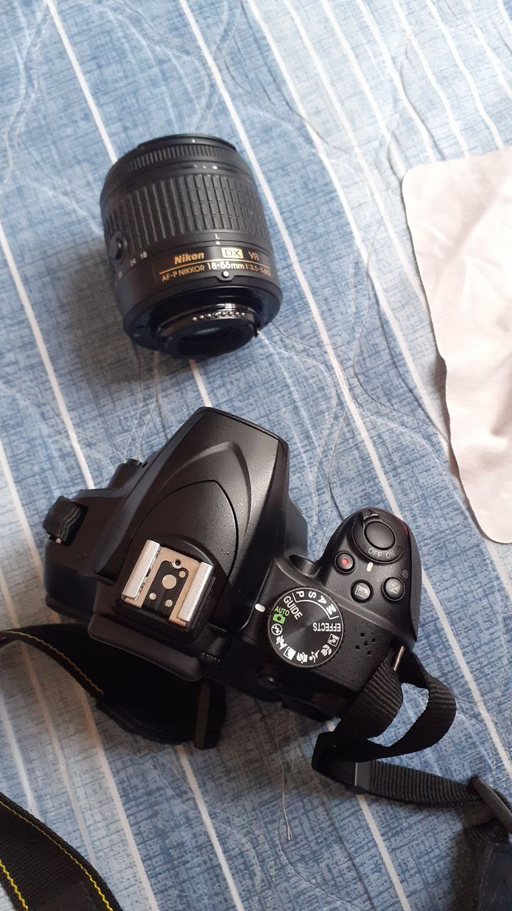

← Back to home
About Me
A closer look at my background, education, and the events and programmes that have shaped how I work.
A closer look at my background, education, and the events and programmes that have shaped how I work.

I'm a Multimedia Technology graduate from Universiti Malaysia Sabah, Kampus Antarabangsa Labuan (UMSKAL), working across two disciplines that share the same foundation: composition, lighting, and pacing. By day I build and implement game blueprints, level progression, and the small systems that make a space feel alive. Outside the engine, I pick up a camera to shoot and edit narrative video and photography, carrying the same cinematic instinct from the viewport to the viewfinder.
Universiti Malaysia Sabah Kampus Antarabangsa Labuan (UMSKAL)
Developed and focused on coding usage in C++, creating interactive media such as Augmented Reality (AR) and website development, real-time 3D creation, and digital video production.

Participated in this youth development programme, building skills and connections relevant to my creative and technical work.

Swap this in for a competition, workshop, internship, or any hands-on experience related to game dev, video, or photography.